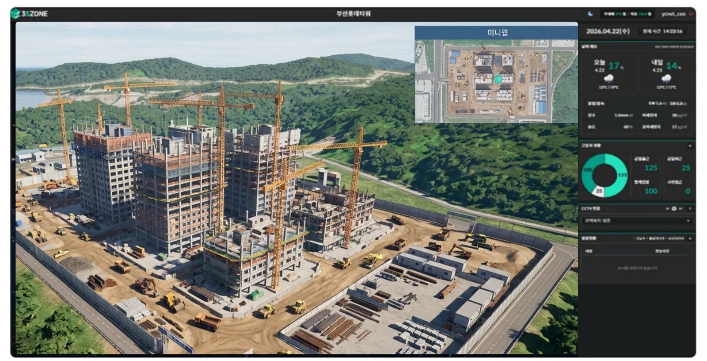

Digital Twin System
디지털 트윈 시스템
현실을 가상으로,
똑같이 구현해 분석하고 예측합니다
현장 설비와 공간을 3D 가상환경으로 구현하고,
실시간 데이터 연동을 통해 현장 상황을 분석·예측하여
위험 요소를 사전에 식별하고 선제적으로 대응합니다.

도입 효과
- 01
현장 상황을 3D로 직관적으로 파악해 의사결정 속도 향상
- 02
센서 · CCTV · 출입 · 위치 데이터를 3D 공간에 겹쳐 한눈에 확인
- 03
축적된 데이터를 분석해 위험 구간과 사고 가능성을 사전에 예측
- 04
설계 · 시공 · 운영 정보를 하나의 모델로 연결해 협업 효율 개선
구축 단계
- 01
실 · 내외 3D 설계
건물의 내부와 외부를 실제와 동일하게 3D로 설계합니다.
- 02
데이터 수집 · 분석
현장의 센서, 영상, 출입, 위치 데이터를 수집하고 분석합니다.
- 03
디지털 트윈 3D 구현
설계 모델과 현장 데이터를 연동해 가상공간에 현장을 구현합니다.
- 04
실시간 통합 관제 모니터링
3D 화면에서 현장 상황과 이벤트 알림을 실시간으로 확인합니다.